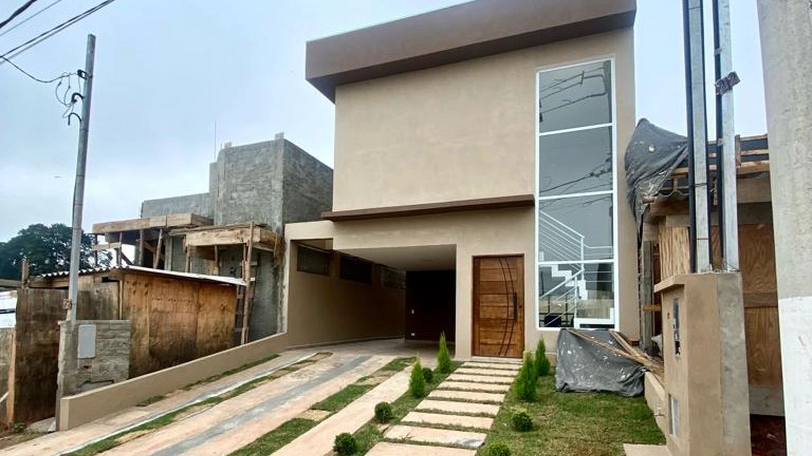
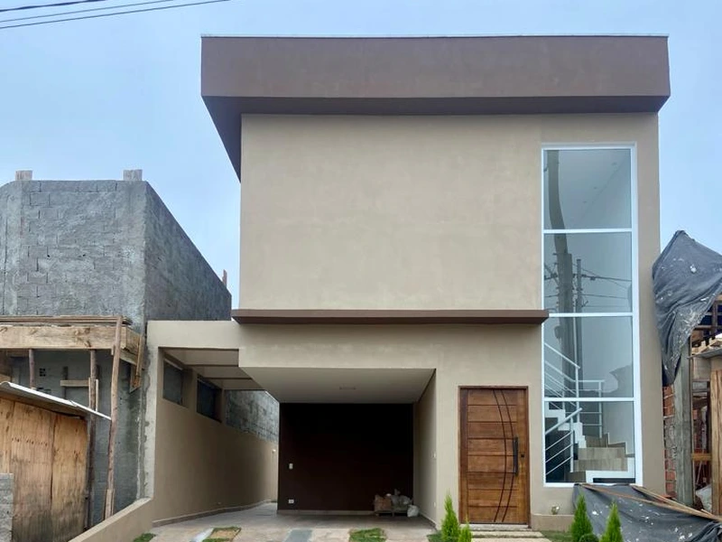
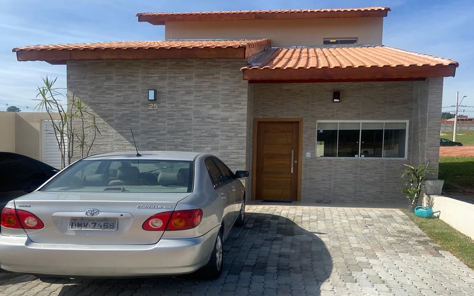
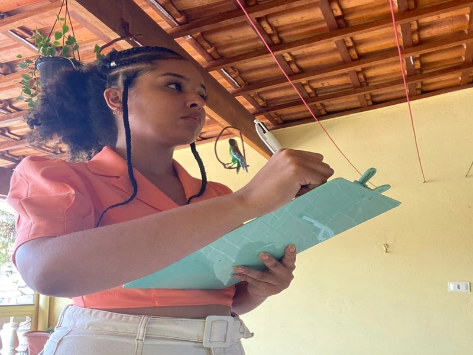
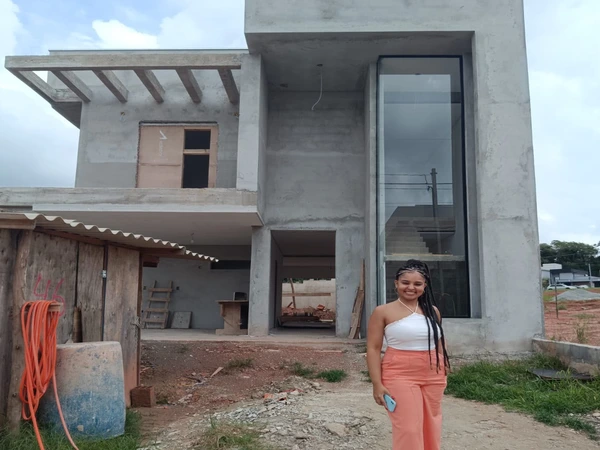
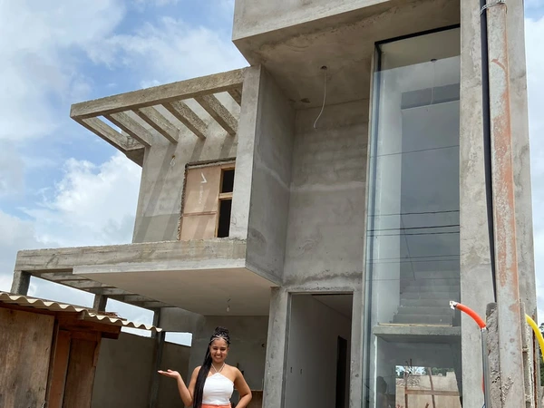
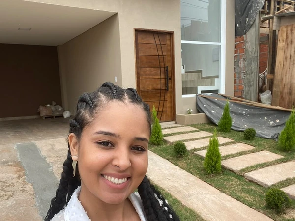
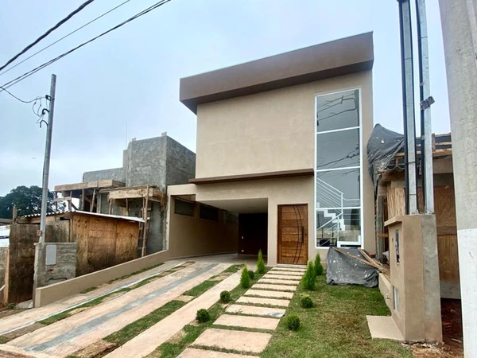

Análise técnica, projetos e condução documental para transformar seu imóvel irregular em uma situação segura e regularizada.
Juliana Lucena
Arquiteta Responsável • CAU

Adequação e aprovação de ampliação não averbada de 160m² com piscina e área gourmet, regularização municipal e expedição de Habite-se final para averbação em cartório.

Levantamento as-built, adequação aos recuos obrigatórios da convenção do condomínio e emissão da Certidão de Conclusão da Obra para averbação na matrícula.
A irregularidade de um imóvel bloqueia vendas, inviabiliza heranças e expõe os proprietários a multas contínuas. Conduzimos cada processo com precisão arquitetônica e respaldo legal completo.
São Paulo, Grande SP e interior.
Em conformidade com códigos vigentes.
Do levantamento à averbação em cartório.
RRT emitida para todas as etapas.
Atuação técnica integrada entre desenho arquitetônico, análise urbanística e tramitação documental perante os órgãos oficiais.
Residenciais • Comerciais • Industriais
Análise minuciosa de ampliações, reformas não declaradas ou construções sem aprovação anterior. Enquadramento nas leis de anistia vigentes e adequação aos parâmetros da Lei de Zoneamento.
Levantamento In Loco • Plantas Técnicas
Levantamento métrico preciso da edificação existente, elaboração de peças gráficas completas, cortes, fachadas, memoriais descritivos e pranchas técnicas conforme os padrões exigidos pelas prefeituras.
Protocolos Oficiais • Cumprimento de Comunique-se
Condução e defesa técnica dos processos perante as Secretarias de Urbanismo e Obras. Resposta imediata a comunique-se e obtenção de Certificado de Conclusão de Obra (Habite-se).
Registro de Imóveis • Receita Federal
Regularização fiscal da obra na Receita Federal (DISO/SERO), emissão da Certidão Negativa de Débitos (CND) e averbação formal da construção na matrícula do Cartório de Registro de Imóveis (RGI).
Due Diligence • Compra, Venda & Inventário
Diagnóstico prévio para transações de compra e venda, inventários e partilhas. Identificação exata de passivos construtivos, estimativa de custos e cronograma técnico de regularização.

Mais de 60% dos imóveis urbanos possuem discrepâncias entre a área real construída e a certidão do cartório. Veja os 4 pontos críticos que travam a segurança do seu patrimônio:
Ampliações de quartos, garagens ou coberturas geram lançamento retroativo de IPTU e multas.
Bancos reprovam financiamento imobiliário e seguradoras recusam cobertura de sinistros.
Impede inventários, divisão amigável de herança, doação em vida ou venda definitiva.
Fiscalização municipal intima a apresentação de projeto sob risco de embargo da edificação.
Metodologia estruturada em 5 etapas para que você tenha visibilidade de cada protocolo com rigor técnico e total previsibilidade.
Vistoria técnica in loco, conferência métrica real, coleta da matrícula e análise profunda dos parâmetros de zoneamento municipal.
Elaboração de plantas baixas, cortes, fachadas, memorial descritivo completo e emissão do Registro de Responsabilidade Técnica (RRT) junto ao CAU.
Abertura do processo administrativo municipal, defesa técnica, acompanhamento de exigências e cumprimento de comunique-se até o deferimento legal.
Acompanhamento da vistoria final dos fiscais municipais, obtenção do Habite-se e emissão da Certidão Negativa de Débitos (CND) perante a Receita Federal.
Apresentação do processo completo no Cartório de Registro de Imóveis para atualização definitiva da matrícula, garantindo segurança jurídica total.
Residência com acréscimo de 145m² de área construída não averbada. A família necessitava formalizar a documentação para venda através de financiamento bancário.

Levantamento métrico in loco e identificação de acréscimos sem alvará anterior.

Conferência das exigências da Lei de Zoneamento e elaboração de plantas as-built.

Aprovação do projeto pela prefeitura e expedição do Habite-se municipal.

CND da Receita Federal e registro definitivo averbado no Cartório de Imóveis.
Juliana Lucena
Arquiteta e Urbanista • CAU/SP Ativo
"A regularização imobiliária é o ato de dar solidez jurídica a quem construiu. Unimos rigor normativo à sensibilidade projetual."
Com mais de uma centena de processos conduzidos nas principais subprefeituras de São Paulo e municípios vizinhos, a ZHAARQ alia o domínio prático do direito urbanístico à excelência gráfica dos projetos arquitetônicos.
Critérios de viabilidade, prazos normativos e as etapas práticas conduzidas pela ZHAARQ junto aos órgãos públicos.
Caso o seu imóvel possua uma situação específica de notificação ou inventário:
Consultar Arquiteta Juliana LucenaEnvie o endereço ou a documentação existente. Nossa arquiteta responsável avaliará a viabilidade de regularização e apresentará o plano de ação adequado.
Privacidade resguardada em conformidade com a LGPD • Atendimento exclusivo para São Paulo e região.
Comunicação transparente com arquiteta responsável técnica.
Protocolos municipais instruídos com rigor para evitar comunique-se.
Imóvel 100% legalizado para comercialização ou partilha familiar.
Precisa de análise?
Fale com um especialista